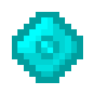
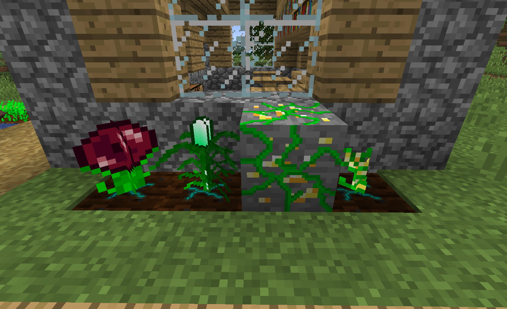

Concepts
Some concepts, mechanics and words may not be overly
clear in Resynth. This Wiki page servers to define
unclear concepts and give a clear description on various
Resynth topics used throughout the mod and the Wiki.
If any term or topic in the Wiki is unclear and a page
for the topic cannot be found, this is a good place to
look.
Resynth - Concepts

Mineral Crystal texture.
Plant Types
Resynth has 3 separate plants (or plant types) for
growing the different resource types in Minecraft. Each
plant type has its own seeds, produce and ways of
obtaining seeds.
Crystalline
plant types grow resources that are
normally dropped by ore (e.g. diamond and coal). This
does
NOT include Iron and Gold as the ore block
is dropped rather than the resource. The plants look
and act similar to Minecraft Wheat plants. The seeds
are dropped randomly by mining the ores.
Metallic
plant types grow ore blocks that spawn
in the world (e.g. gold and iron). The plants produce
can be smelted back into the ore. The seeds are obtained
randomly by blowing the ore blocks up with TNT. These
plants act similar to Minecraft Melon plants.
Biochemical
plant types grow mob drops. The seeds
are obtained by the killing the mob that would normally
drop the resource. These plants have no
similar
Minecraft plant. When fully grown, they can be harvested
by right clicking. When harvested, they return to a growth
stage of 4 instead of 1 like Crystalline plant types.
The produce can be thrown for a chance at getting more
seeds.

Biochemical, Crystalline and Metallic plant types.
Produce
Produce is the name given to the resources obtained
from Resynth plants. Organic Ore is the produce type
for Metallic plants, Shards are the produce type
for Crystalline plants and Bulbs are the produce type
of Biochemical plants. The produce of any plant can be
smelted to get the resource (or final resource). For
example: Diamond Shards can be smelted into Diamonds,
Organic Iron Ore can be smelted into iron ore and
Ink Bulbs can be smelted into ink sacs. Seeds are obtained
from the produce differently depending on the produce
type.
Source
The term source is given the mob or ore that drops
seeds for a plant. The source ore is the ore
that will drop the seeds needed to grow more of the ores.
The source mob is the mob that drops seeds for
a particular mob drop.
Resource
The word resource is usually used to refer
to gems (diamonds and emeralds), although not all gems
are resources. Anything dropped by an ore (that does not
need smelting) is considered a resource. So following
that logic, diamonds, coal, emeralds, glowstone and
nether quartz are all resources but iron and gold is not.